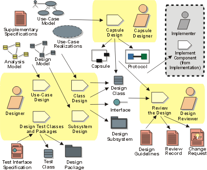

Workflow Detail: Design Components
Topics |
 |
Purpose 
This workflow detail applies designs which utilize the Artifact: Capsule as the primary design element, primarily within the context of a real-time or reactive system. The purpose of this workflow detail is to:
- Refine the definitions of design elements (including capsules and protocols) by working out the 'details' of how the design elements implement the behavior required of them.
- Refine and update the use-case realizations based on new design element identified (i.e. keeping the use-case realizations updated)
- Reviewing the design as it evolves
- Implementing the design elements as components
- Testing the implemented components to verify functionality and satisfaction of requirements at the component/unit level
How to Staff
Typically, one person or a small team is responsible for a set of design elements, usually one or more packages, subsystems or capsules containing other design elements. This person/team is responsible for fleshing out the design details for the elements contained in the package, subsystem or capsule: completing all operation definitions and the definition of relationships to other design elements. The Activity: Capsule Design focuses on the recursive decomposition of functionality in the system in terms of capsules and (passive or data) classes. The Activity: Class Design focuses on refining the design of passive class design elements, while the Activity: Subsystem Design focuses on the allocation of behavior mapped to the subsystem itself to contained design elements (either contained capsules and classes or subsystems). Typically subsystems are used primarily as large-grained model organization structures, while capsules being used for the bulk of the work and "ordinary" classes being relegated largely to passive stores of information.
The individuals or teams responsible for designing capsules should be knowledgeable in the implementation language as well as possessing expertise in the concurrency issues in general. Individuals responsible for designing passive classes should also be knowledgeable in the implementation language as well as in algorithms or technologies to be employed by the class. Individuals or teams responsible for subsystems should be more generalists, able to make decisions on the proper partitioning of functionality between design elements, and able to understand the inherent trade-offs involved in various design alternatives.
While the individual design elements are refined, the use-case realizations must be refined to reflect the evolving responsibilities of the design elements. Typically, one person or a small team is responsible for refining one or more related use-case realizations. As design elements are added or refined, the use-case realizations need to be reconsidered and evolved as they become outdated, or as improvements in the design model allow for simplifications in the use-case realizations. The individuals or teams responsible for use-case realizations need to have broader understanding of the behavior required by the use cases and of the trade-offs of different approaches to allocating this behavior amongst design elements. In addition, since they are responsible for selecting the elements that will perform the use cases, they need to have a deep understanding of external (public) behaviors of the design elements themselves.
Work Guidelines
Typically the work here is carried in individually or in small teams, with informal inter-group interactions where needed to communicate changes between the teams. As design elements are refined, responsibilities often shift between them, requiring simultaneous changes to a number of design elements and use-case realizations. Because of the interplay of responsibilities, it is almost impossible for design team members to work in complete isolation. To keep the design effort focused on the required behavior of the system (as expressed in use-case realizations), a typical pattern of interaction emerges:
- design elements are refined by the responsible persons or teams
- a small group (perhaps 2-5 people) gathers informally to work out the impact of the new design elements on a set of existing use-case realizations
- in the course of the discussion, changes to both the use-case realization and the participating design elements are identified
- the cycle repeats until all required behavior is supported and the design elements are considered complete enough to implement.
Because the process itself is iterative, the criteria for 'complete enough to implement' will vary depending on the position in the lifecycle:
- In the elaboration phase, the focus will be on architecturally-significant behaviors, with all other 'details' effectively ignored (or more likely 'stubbed-out')
- In the construction phase there is a shift to completeness and consistency of the design, so that by the end of the construction phase there are no unresolved design issues.